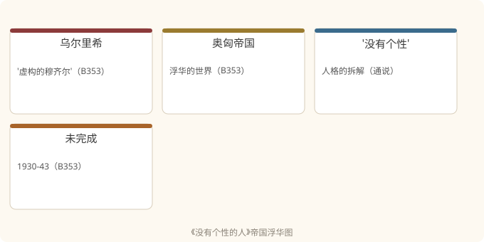

没有个性的人
一、基本信息
| 作者 | 罗伯特·穆齐尔 |
|---|---|
| 成书/出版 | 1930-43年（Britannica B353：Der Mann ohne Eigenschaften (1930-43)——第一部1930、第二部部分1933、遗稿1943） Robert Musil — Encyclopaedia Britannica（百科全书） |
| 国别/地区 | 奥地利 |
| 时代 | 近代 · 20世纪30年代 |
| 体裁 | 长篇小说（未完成） |
| 语言 | 德语 |

《没有个性的人》帝国浮华图（主题·结构图）
二、创作背景
Britannica（B353）：'monumental unfinished novel'——'a witty and urbane view of life in the glittering world of the Austro-Hungarian Empire, told from the viewpoint of Ulrich, a fictionalized Musil'。
Britannica（B353）：第一部1930年出版、第二部部分1933年、'a remaining portion was published posthumously in 1943'。
Britannica（B353）：穆齐尔一战服役、1938年流亡瑞士。
三、内容脉络
乌尔里希——'虚构的穆齐尔'——在奥匈帝国浮华世界中的游历（B353：viewpoint of Ulrich）。
'平行行动'：帝国的自我庆典与乌托邦（情节通说待核——B353未载）。
四、主要人物表
| 人物 | 身份 | 说明 |
|---|---|---|
| 乌尔里希 | 主角/试验者 | （B353：Ulrich, a fictionalized Musil） |
| 阿加特 | 第二部人物 | （通说待核，B353未载） |
五、主题与艺术特点
- '没有个性'：对人格概念的拆解（通说待核）。
- 奥匈帝国的浮华与虚无（B353：glittering world）。
- 试验生活（书名语境——通说待核）。
六、影响与评论
- Britannica：'monumental unfinished novel'（B353）。
Robert Musil — Encyclopaedia Britannica（百科全书） - Britannica：1943年遗稿出版（B353）。
Robert Musil — Encyclopaedia Britannica（百科全书）
七、阅读建议
难点
- 未完成的开放结构。
- 1913年前后奥匈史与'平行行动'（通说待核）。
- 《没有个性的人》中译本（人民文学等——通说待核）。
- 德文原版。
穆齐尔唯一巨著；分部慢读。
八、待核实
- '平行行动'（Parallelaktion）细节核对（B353未载）。
- 阿加特/克拉丽瑟人名核对（B353未载）。
- 中译本分卷（第一部/第二部）细节待核。
本页主要来源
罗伯特·穆齐尔的其他收录作品：没有个性的人